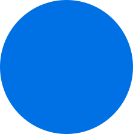
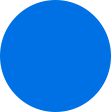

OVERVIEW
독일의 미술과 공예, 사진, 건축 등을 교육한 학교로
바우하우스의 선언문과 작품을 기반으로 제작한 웹 페이지이며 그 철학을 바탕으로 디자인
Javascript를 활용해 동적인 웹으로 제작

blank
JavaScript를 활용한 동적 구현 웹 디자인 2023.07.26 - 08.02
독일의 미술과 공예, 사진, 건축 등을 교육한 학교로
바우하우스의 선언문과 작품을 기반으로 제작한 웹 페이지이며 그 철학을 바탕으로 디자인
Javascript를 활용해 동적인 웹으로 제작
HTML5 / CSS3 / Javascript / Figma

#단순한 #원색의 #감각적인
 

바우하우스의 인물과 건물, 제품등의 실제 요소를
흑백으로 나타내어 원색과의 색 대비를 극대화 시키고
mix-blend-mode를 사용하여 컬러와 어우러지도록 표현.
오늘날까지도 다양한 분야에 많은 영향과 영감을 주는 바우하우스의
철학과 역사를 느낄수 있도록 디자인.
바우하우스의 교육 철학은 효과적이고 효율적인 디자인을 중심으로
했기 때문에 감각적이고 단순한 형태와 색감을 사용.
간결한 모양과 제한된 색을 이용해 색다른 디자인을 만들어내는
가능성을 보여주는 것이야말로 바우하우스다운 디자인이라 생각한다.
SVG 파일이 화면에 따라 선굵기가 달라지는 현상.
해당 SVG파일의 'vector-effect'의 속성을 'non-scaling-stroke'으로 변경.
변경 후 선의 굵기가 일괄적으로 굵어지거나 얇아지면 ‘stroke-width’ 값을 조절한다.
Mobile 우선 기준으로 작업
PC 작업할때 하단 변경이 쉽지 않았음.
하단 작업 중 Mobile과 Tablet, PC가 각각 다른점을 생각 하지 않고 Mobile 구조에만 맞춰 HTML작업.
나머지는 Position으로 개별적으로 위치를 맞출 수 밖에 없었다.
반응형 웹을 제작할 때에는 HTML구조를 모두 고려하여 작업해야 한다는 점.
스와이퍼 사용
swiperjs 사용.
보이지 않는 영역을 'display:none' 으로 감춰두면 auto rolling이 작동되지 않는 현상.
>swiperjs 사이트에 규정된 'breakpoints'를 사용하여 적용시키니 작동이 되었다.
포인트의 고민. 키프레임 애니메이션으로 불빛 반짝임 효과
디자인적으로 포인트를 줄 수 있는 부분이 있어야 한다고 생각되어
키프레임 애니메이션을 사용.
세개의 svg 이미지가 번갈아 나오도록 구성하여 전구가 깜빡이는 느낌을 내어보았다.
View Site